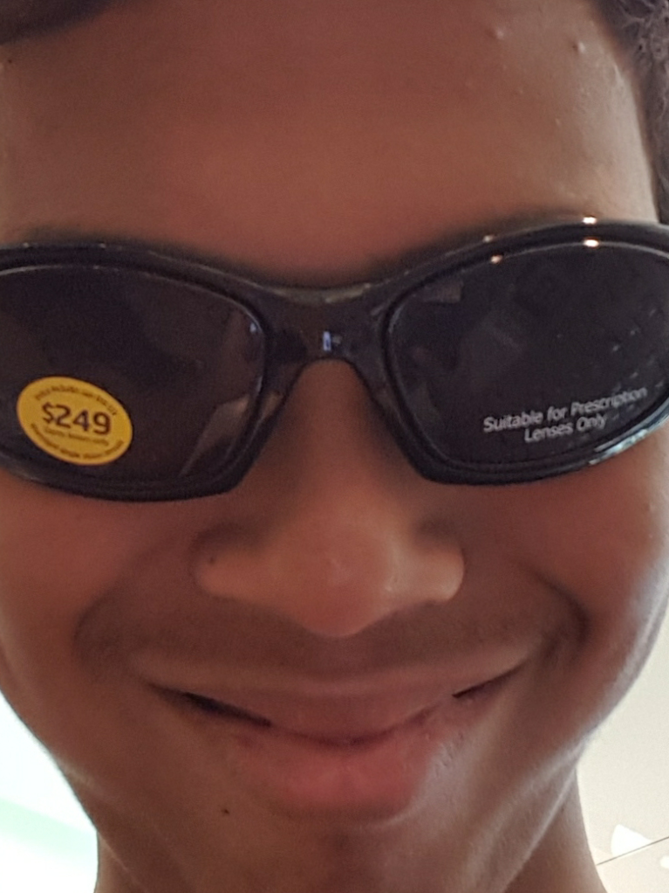

Hello anyone who has stumbled upon this page, my name is Michael Irlandez, a first year at RMIT, studying for a Bateleurs degree in Information technology. The secondary school that I attended was Rosehill Secondary Collage, in Niddrie. I am currently 18 years old (2021) birthday on the 2nd of December. I am 7/8ths Filipino and 1/8 Torres Strait Islander. My parents speak Tagalog (the language of the Philippines), I never learnt how to speak it, so English is my first and only language.
One somewhat interesting thing about me is that I collect Yu-Gi-Oh! Cards. I haven’t competed in any sort of official tournaments or anything, but I have considered it in the past. i only recently started collecting again in 2019 and now, its almost a problem… at least I don’t need to worry about paying rent or buying food, living with my mum and all (for now).
My interest in IT was mainly born out of an excessive amount of video games, mainly the process in building computers was the main draw (I love opening up my laptop for no reason just to look at the internal components). The interest only grew when in year 9 in secondary, IT was an elective, basic programming in Microsoft basics 2010 and basic data base stuff in excel was super interesting to me and thus, it became something I wanted to pursue a career in.
What pushed me to choose IT in year 9 was a small school holiday class that I attended in year 8, where I made a basic calculator app on an iPhone. The background of the app was a blown-up image of the Pokémon Gengar and it could perform basic mathematical functions. Seeing the workings of such a basic app got me quite interested in how computers worked.
RMIT was recommended to me through one of my school’s carrier advisors, and choosing the Royal Melbourne Institute of Technology to study IT, seemed like a no brainer.
Knowing what subjects, I’m studying at RMIT, Introduction to Programming and information technology, user centred design and practical database concepts, I expect that I will know the basics of both python and SQL, while also being able to create a user friendly design for either an application or infographic and, from the way this class is going, I’m hoping to learn the basics in HTML, and possibly other programming applications, possibly the unity game engine, if were given time to learn our own thing for future projects.
My dream job would ideally be nothing, making smart investments in certain companies so that I don’t need to work, or at least that would be the dream. But when it comes to a dream job in the IT industry, it would have to involve some sort of development of some kind, as I don’t think I would handle the more database related stuff too well.
Seeing jobs that are IT related on the website seek, the most appealing IT jobs seem to be ones that involve being on an IT help desk.